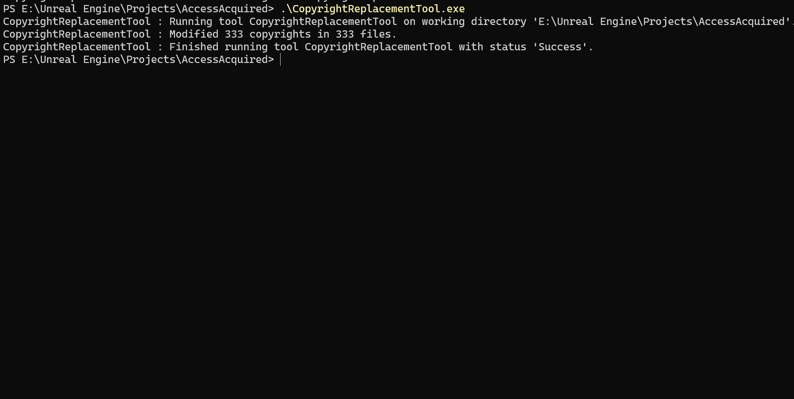
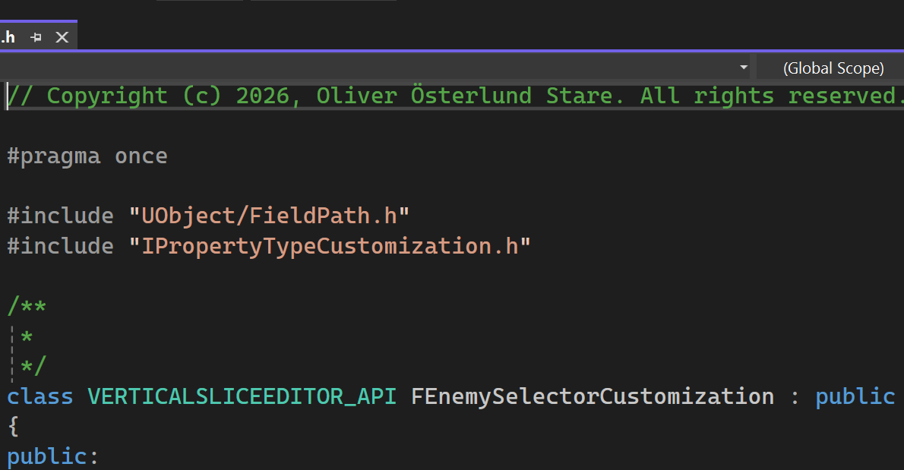

Copyright Replacement Tool
What is it?
A simple Python script that replaces, updates or adds the desired copyright to a set of code files.
Saved me a couple hours of copy pasting across the many incremental updates of Github repositories and similar I've done for this portfolio.
How did I make it?
The tool relies on two text files to receive information from outside the exe, one for the copyright to insert/update and one which
specifies which file types are allowed to search for and replace in. This is opt-in, ensuring that only the desired code files are affected.
All folders and subfolders of the directory that the executable is in is iterated through, and any files with a matching extension is collected.
If the first line of a file is a comment, it is replaced with the copyright comment to ensure its at the top of the file.
If however non-comment content is found, the copyright along with empty lines are inserted before to ensure no actual code is affected.
How is it used?


It's really simple!
Drop the executable and the accompanying text files in a folder, configure the copyright to add/update and the allowed filetypes to edit.
Run the executable and any files in the same folder or subfolders will be searched and fixed!
Takeaways
• While it definitely took a bit to get familiar with the syntax again, its well worth the time for tools like this.